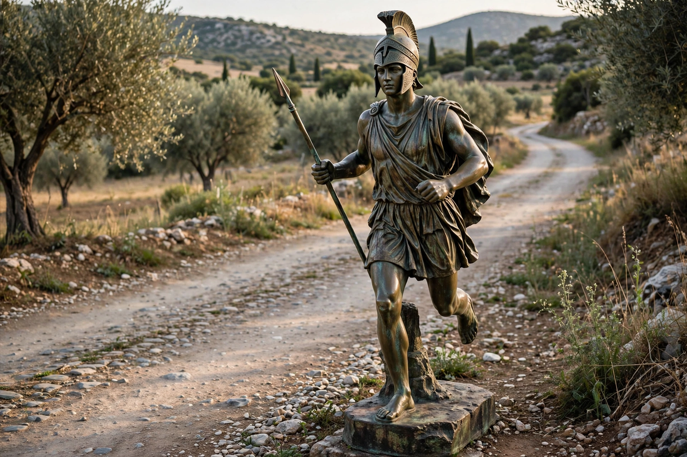

Pheidippides (Greek: Φειδιππίδης, Feidippidēs; c. 530 BC – c. 490 BC) was an Athenian herald, or hemerodrome ("day-long runner"), who is said to have run from Athens to Sparta to request assistance before the Battle of Marathon in 490 BC. According to later tradition, he also ran from Marathon to Athens to announce the Greek victory, after which he collapsed and died — a story that inspired the modern marathon race.
The oldest account, by the historian Herodotus, records that before the battle the Athenians sent Pheidippides (written Philippides in many manuscripts) to Sparta to ask for aid against the invading Persians. Herodotus says he covered the roughly 240 kilometres (150 miles) between Athens and Sparta and arrived "on the day after" he left. On the way, near Mount Parthenion above Tegea, Pheidippides claimed to have encountered the god Pan, who asked why the Athenians neglected his worship despite his goodwill toward them; the Athenians later built a shrine to Pan and honoured him with sacrifices and a torch-race. The Spartans agreed to help but, bound by religious law, would not march until the full moon, arriving too late for the battle itself.
The more famous story — a run from the battlefield at Marathon to Athens, a distance of about 40 kilometres (25 miles) — does not appear in Herodotus. It is first recorded by Plutarch, over five centuries later, who cites Heraclides Ponticus naming the runner either Thersipus or Eucles. Lucian of Samosata later attached the run to "Philippides," telling how he arrived breathless, cried out "Joy to you, we've won!" (in Greek, Nenikēkamen), and died. Historians generally regard this tale as a later conflation with the genuine Sparta run.
When the modern Olympic Games were revived in 1896, organisers created a long-distance race from Marathon to Athens, won by the Greek Spyridon Louis, in honour of the legend. The marathon distance was standardised at 26 miles 385 yards (42.195 km) after the London Games of 1908. The Spartathlon, an annual ultramarathon of 246 kilometres held since 1983, retraces Pheidippides' historical run from Athens to Sparta.
See also: Battle of Plataea · Greco-Persian Wars